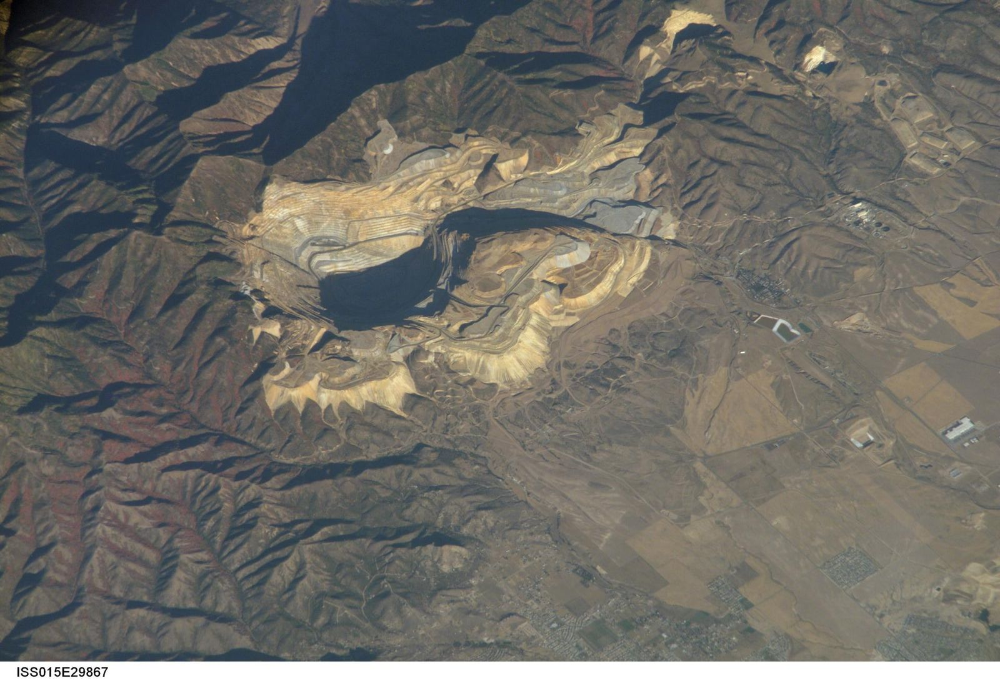

Part 4: Quakes, Resources and Time · Chapter 14 of 15
Treasures from the Earth
Gems, metals, building stone and fuel, and what they cost us.

Almost every material object we use was dug or pumped from the ground. The same geological processes described in this guide concentrate useful materials in particular places.
Gems and metals
Diamonds form more than 150 km down, in the mantle, and are carried up rapidly by rare, deep-sourced eruptions. Other gems grow in metamorphic rocks or in the last, fluid-rich stages of cooling magma. Many metal ores form where hot water circulating through the crust dissolves metals and deposits them in veins as it cools. Copper deposits above old subduction zones are a major example.
Building materials
Sedimentary rocks supply most of our building materials. Limestone is the main ingredient of cement. Sand and gravel make concrete and glass, and clay is used for bricks and ceramics. By weight, sand and gravel are the most extracted materials on Earth.
Fossil fuels
Coal formed from plant material that built up in swamps as peat and was then buried and compressed over millions of years. Oil and natural gas formed mainly from the remains of marine plankton, buried in sea-floor mud and slowly cooked by the Earth's heat. These fuels took millions of years to form and are being used up in a few centuries.
Key terms
- gemstone
- A beautiful, rare mineral crystal that is cut and polished for jewellery.
- diamond
- The hardest natural mineral. Its crystals are found in rock that was once molten, deep under the earth’s shell.
- jade
- A tough green stone used for carving. It is made from the minerals nephrite and jadeite.
- fossil fuel
- A fuel such as coal, oil or gas, formed over millions of years from the remains of living things.
- peat
- Soft, brown, partly rotted plant material. Under pressure, layers of peat become coal.
- coal
- A black rock that burns, formed from ancient forests buried and compressed under layers of mud and sand.
- oil
- A liquid fossil fuel formed mostly from the remains of tiny sea life.
- plankton
- Tiny plants and animals that drift in the sea. Their remains formed most of the world’s oil.
- uranium
- A radioactive metal. It can be used as a source of power instead of fossil fuels.
Check your understanding
Think of your answer, then open each question to compare.
Where do diamonds form?
Deep in the mantle, more than 150 km down, before being carried up by rare deep-sourced eruptions.
What did oil and natural gas mostly form from?
The remains of marine plankton buried in sea-floor mud and slowly heated.
Why are fossil fuels called non-renewable?
They take millions of years to form but are being used up in centuries.